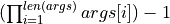

Sweep Classes (quanguru.classes.QSweep)¶
Contains two classes used for sweep functionalities.
NOTE : Both of these classes are not intended to be directly instanciated by the user.
Simulation objects has Sweep/s as their attributes, and
_sweep/s are intended to be created by calling the relevant methods over Simulation.Sweep.
|
Implements methods and attributes to sweep the value of an attribute for some objects for a list of values. |
|
A container class for |
Function Name |
Docstrings |
Unit Tests |
Tutorials |
|---|---|---|---|
_sweep |
✅ |
❌ |
❌ |
Sweep |
✅ |
❌ |
❌ |
- class _sweep(**kwargs)[source]¶
Bases:
quanguru.classes.baseClasses.updateBaseImplements methods and attributes to sweep the value of an attribute for some objects for a list of values. The default sweep
_defSweep()sweeps the value for a given attribute (a string stored inkey) of objects insubSysdictionary. The list of values (stored in_sweepList) to be swept are set either directly by giving alistor thesweepMin-sweepMax-sweepStepwithlogSweep. Default sweep function can be replaced with any custom method by re-assigning thesweepFunctionto the function reference. The default sweep method requires the index of the value from the list of values to set the next value, this index is provided by the modularSweep and useful for multi-parameter sweeps. It keeps a value fixed by re-assigning it using the same index, and theparamBoundBaseand other relevant classes uses the custom setattr methods (seesetAttr()andsetAttrParam()) to make sure thatparamUpdatedboolean is not set toTruefor the same value. This class implements a single sweep, and multi parameter sweep is achieved by theSweepclass.- label: str = '_sweep'¶
(class attribute) class label used in default naming
- _internalInstances: int = 0¶
(class attribute) number of instances created internally by the library
- _externalInstances: int = 0¶
(class attribute) number of instances created explicitly by the user
- _instances: int = 0¶
(class attribute) number of total instances = _internalInstances + _externalInstances
- _updateBase__function¶
protected attribute pointing to a sweep function, by default
_defSweep(). This attribute get&set using the sweepFunction property to replace default with a customized sweep method.
- sweepMax¶
maximum value for the swept parameter, used with other attributes to create the sweepList
- sweepMin¶
minimum value for the swept parameter, used with other attributes to create the sweepList
- sweepStep¶
corresponds to the step size in a linearly spaced sweepList, or number of steps in logarithmic case, used with other attributes to create the sweepList
- _sweepList¶
protected attribute to store a list of values for the swept parameter. Can be given a full list or be created using sweepMin-sweepMax-sweepStep values.
- logSweep¶
boolean to create either linearly or logarithmically spaced list values (from sweepMin-sweepMax-sweepStep).
- multiParam¶
boolean to determine, if two different sweeps are swept simultaneously (same length of list and pair of values at the same index are swept) or a multi-parameter sweep (fix one sweep the other and repeat).
- _sweepIndex¶
stores the index of the value (from the _sweepList) currently being assigned by the sweep function. Used by the default methods but also useful for custom methods. It is calculated by the modular arithmetic in modularSweep and passed to here by
Sweepobject containing self in its subSys. It starts from -1 and the correspoding property returns _sweepIndex+1, while therunSweep()sets it to ind+1 for a given ind from modularSweep. This whole ordeal is due to make sure that python list indexing and modular arithmetic properly agrees for the sweep functionality. I feel it can be improved but will leave as it is for now.
- property index¶
returns
self._sweepIndex + 1. reason for +1 is explained in_sweepIndex. There is no setter, the value of _sweepIndex is updated by therunSweep()and is an internal process.
- property sweepFunction¶
gets and set
_updateBase__function, which should point to a Callable.
- property sweepKey¶
gets and sets
_updateBase__key, which should be string.
- property sweepList¶
gets and sets
_sweepList. Setter requires a list input, if it is not set, getter tries creating the list (and setting_sweepList) using sweepMin-sweepMax-sweepStep attributes.
- static _defSweep(self)[source]¶
This is the default sweep function, and it just calls the
_runUpdateby feeding it the value from thesweepListat the positionind._runUpdatefunction just sets the attribute (for the given key) of everysubSysto a given value (val).The modularSweep methods uses multiplication of length of
sweepList/s(stored in __inds attribute ofSweepinstances) as a loop range, and the current loop counter is used by the_indicesForSweep()to calculate which indices of multi _sweep is currently needed.- Parameters
ind (int) – Index of the value from
sweepList
- class Sweep(**kwargs)[source]¶
Bases:
quanguru.classes.base.qBaseA container class for
_sweepobjects and relevant methods for creating/removing and carrying multi-parameter sweeps. It stores_sweepobjects in itssubSysdictionary, and it has two additional private attributes to store sweep lengths and their multiplications, which are used in modularSweep and by_indicesForSweep()to carry multi parameter sweeps. Instances of this class are used as attributes ofSimulationobjects, and those are intended to be used for_sweepcreations.- label: str = 'Sweep'¶
Used in default naming of objects. See
label.
- _internalInstances: int = 0¶
(class attribute) number of instances created internally by the library
- _externalInstances: int = 0¶
(class attribute) number of instances created explicitly by the user
- _instances: int = 0¶
(class attribute) number of total instances = _internalInstances + _externalInstances
- __inds¶
a list of
sweepListlength/s of multi-parameter_sweepobject/s insubSysdictionary, meaning the length for simultaneously swept_sweepobjects are not repeated. the values are appended to the list, if it is the firstsweepto be included intosubSysormultiParam is True.
- __indMultip¶
the multiplication of all the indices in
inds. This value is used as the loop range by modularSweep.
- property inds¶
returns _Sweep__indsand there is no setter
- property indMultip¶
returns _Sweep__indMultip, and there is no setterNOTE : The reason this property returns a pre-assingned value rather than calculating from the
indsis to avoid calculating it over and over again, which could be avoided by checking if_Sweep__indMultip is None, but that might create other issues, such as re-running the same simulation after a change insweepListlength/s. It still can be improved, and it is possible to avoid such issues and get rid ofprepare(), which is called inrunmethods ofSimulations, by some modifications in these properties.
- property sweeps¶
The sweeps property wraps
subSysdictionary to create new terminology, it works exactly assubSys.
- removeSweep(sys)[source]¶
Removes a
_sweepit self, or all the_sweepobjects that contain a particularsysin it. Since, it usesremoveSubSys, it works exactly the same, meaning names/aliases/objects/listOfObjects can be used to remove.If the argument
sysis an_sweepobject, this method callsremoveSubSys(since_sweepobjects are stored insubSysdictionary ofSweepobjects).Else, it calls the
removeSubSyson every_sweepin itssubSysdictionary (sincesystemsare stored insubSysdictionary of_sweepobjects).
- createSweep(system=None, sweepKey=None, **kwargs)[source]¶
Creates a instance of
_sweepand assing itssystemandsweepKeyto given system and sweepKey arguments of this method. Keyworded arguments are used to set the other attributes of the newly created_sweepobject.- Parameters
system (Any) – Since
systemproperty setter of_sweepbehaves exactly assubSyssetter, this can be various things, from a single system to name/alias of the system, or from a class to a list/tuple contaning any combination of these.sweepKey (str) – Name of the attribute of system/s that will be swept
- Returns
The new
_sweepinstance.
- prepare()[source]¶
This method is called inside
runmethod ofSimulationobject/s to updateindsandindMultipattributes/properties. The reason for this a bit argued inindMultip(), but it is basically to ensure that any changes tosweepList/sormultiParam/sare accurately used/reflected (especially on re-runs).
- runSweep(indList)[source]¶
called in modularSweep to run all the
_sweepobjects in aSweep. indices from a given listindListare used by therunSweepmethod of_sweepobjects, and it switches to a new index, if themultiParam is True. This means that the_sweepsshould be created in an order such that_sweepobjects that run simultaneously have to be added tosubSysone after the other. Also, for nested Sweeps, the indList should be a properly nested list.
- static _indicesForSweep(ind, *args)[source]¶
method used in modularSweep to calculate indices for each sweepList from the loop counter
ìndusing the total lengths*args. It is hard to describe the exact calculation in words, but it is trivial to see from the math (TODO) which i will do later.the loop counter can at max be , and multi-parameter sweeps loops the first sweepList while fixing the others. So, at each inp = args[0] the first list should start from zero, and the second list moves to next item, and this relation goes up in the chain, e.g. at each inp = args[0]*args[1], the index of the third need to be increased, and so on. Therefore, the current index for the first sweepList simply is the reminder of inp with args[0].